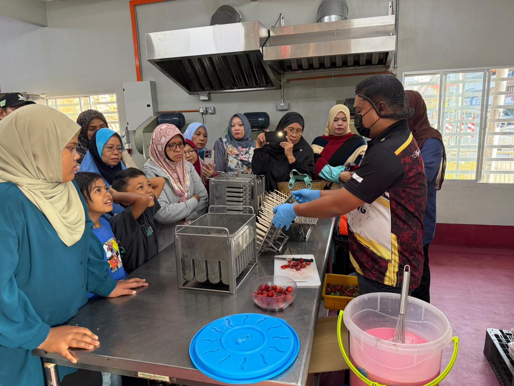
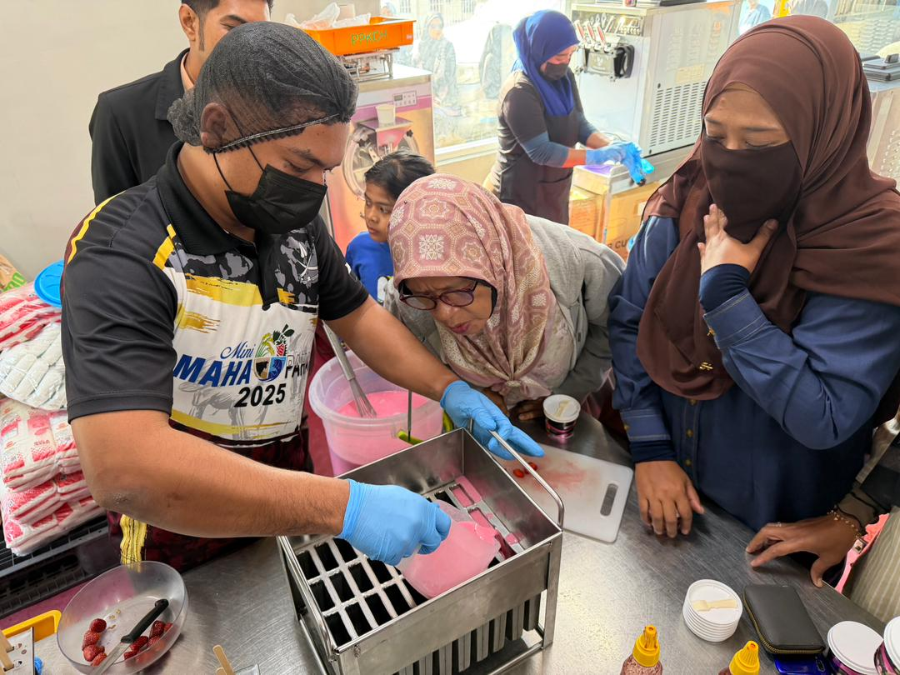
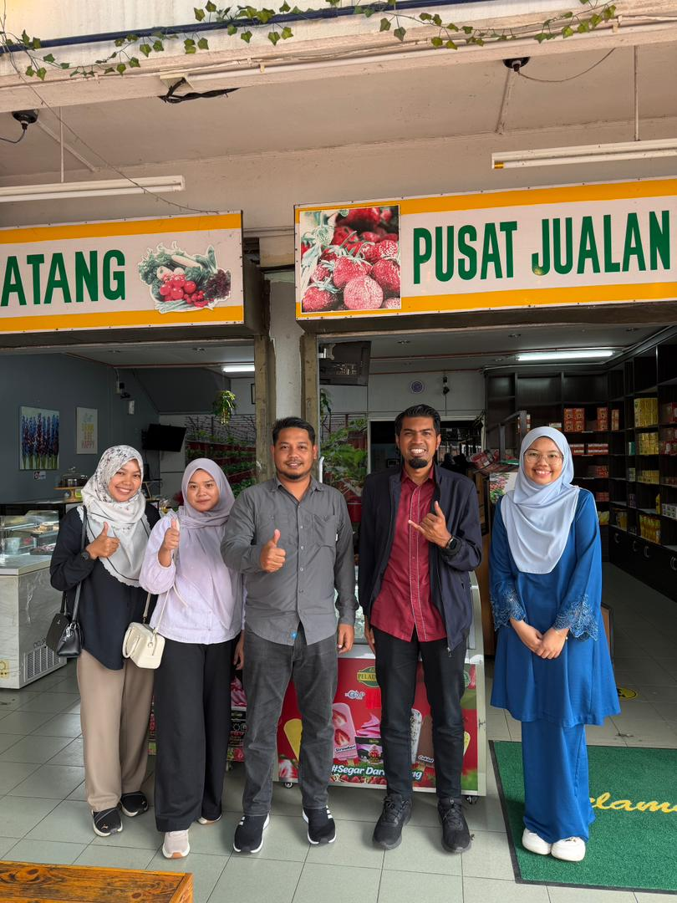
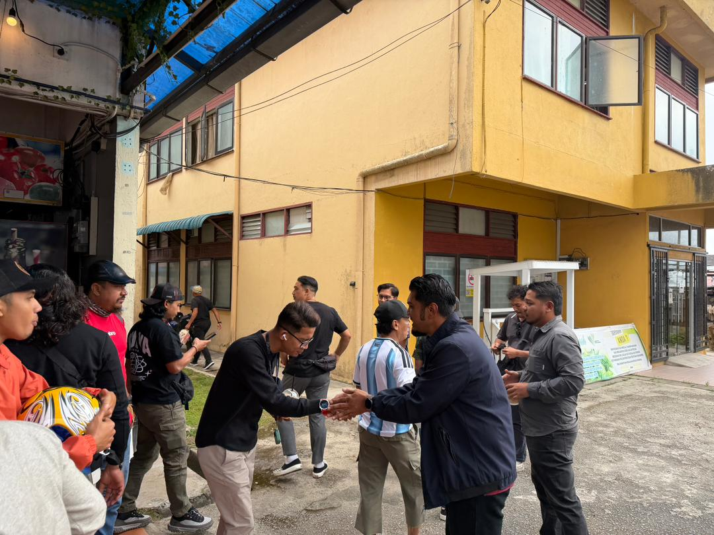
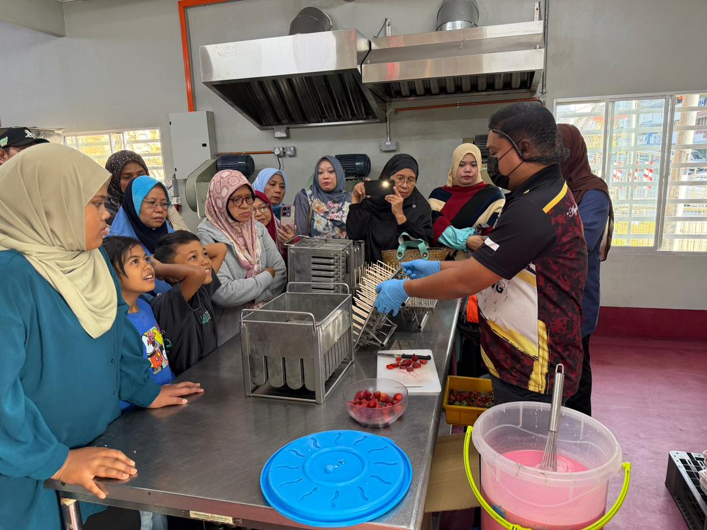
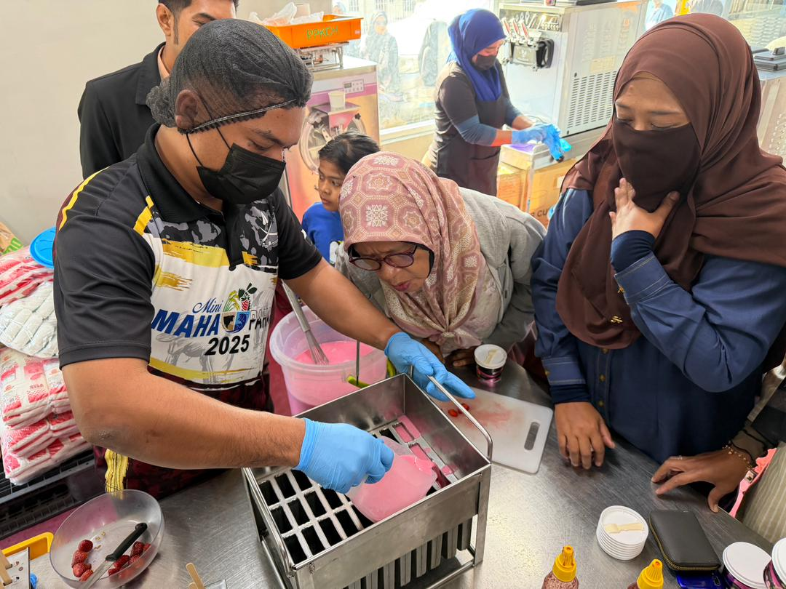
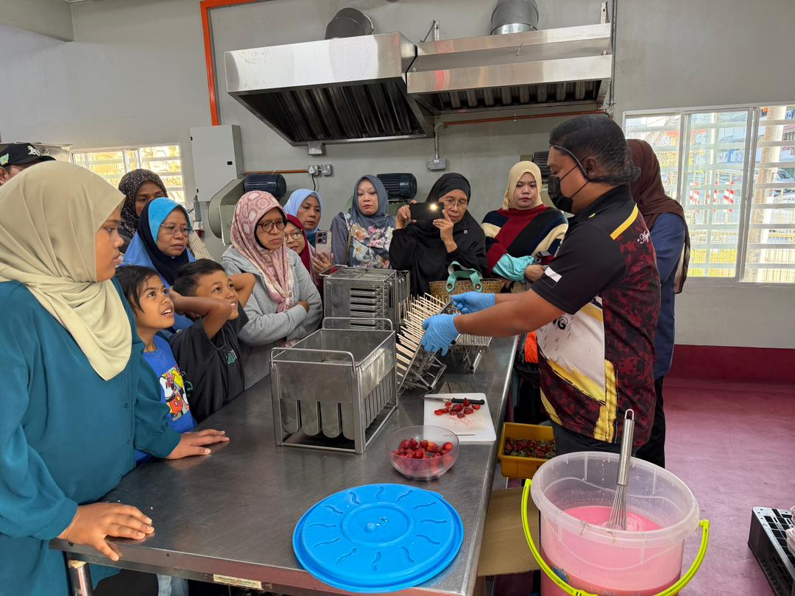
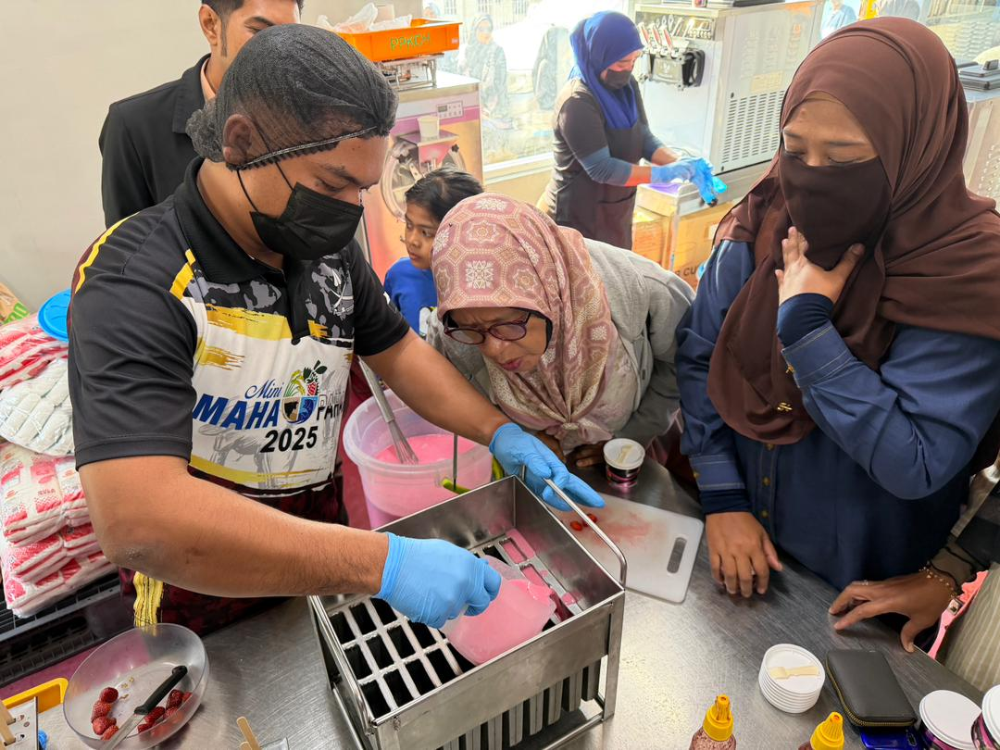
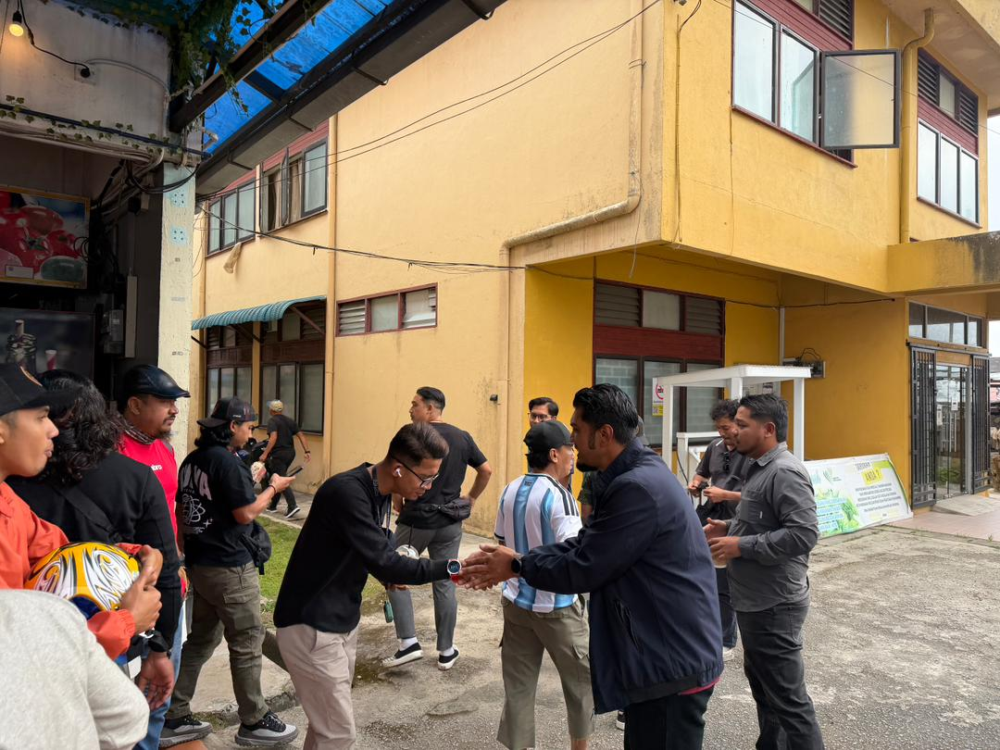
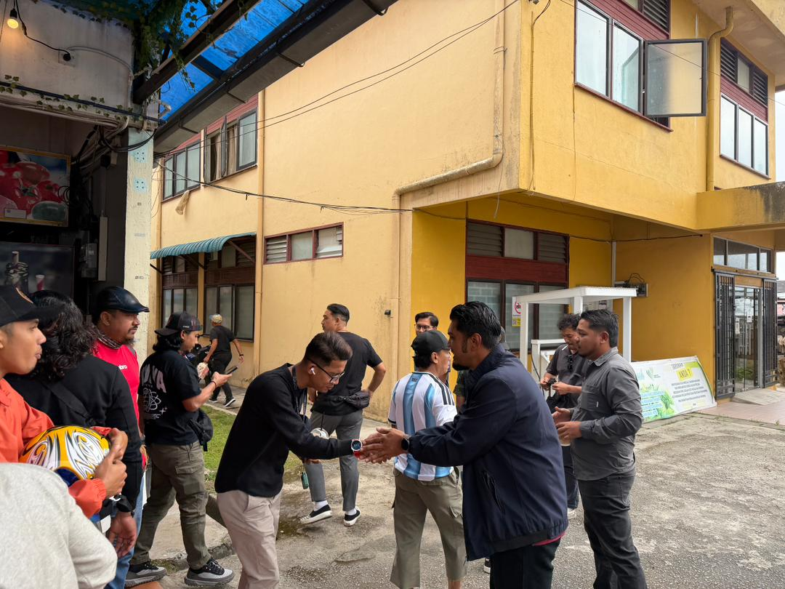

Lawatan rasmi wakil pertanian negeri ke PPK Cameron Highlands.
PPK Cameron Highlands telah menerima lawatan kerja rasmi bagi meninjau perkembangan projek dan operasi semasa. Lawatan ini turut memberi peluang kepada pegawai untuk memberikan panduan serta cadangan penambahbaikan bagi memastikan projek terus maju dan mampan.
Selain itu, para pengunjung juga diberi penerangan mengenai strategi pertanian moden dan kaedah pengurusan ladang yang efisien untuk meningkatkan hasil dan kualiti tanaman.
PPK Cameron Highlands received an official visit to review ongoing projects and operational developments. The visit also provided an opportunity for officers to offer guidance and improvement suggestions to ensure projects remain progressive and sustainable.
Additionally, visitors were briefed on modern agricultural strategies and farm management techniques to improve crop yield and quality.
PROGRAM JUALAN AGRO MADANI
22 JANUARI 2026 | BRINCHANG
Orang ramai hadir memeriahkan Program Jualan Agro Madani.


Program Jualan Agro Madani mendapat sambutan yang amat menggalakkan dengan pelbagai produk segar ditawarkan. Para pengunjung berpeluang mencuba produk secara langsung dan membeli hasil tani tempatan sebagai sokongan kepada usahawan.
Aktiviti ini juga menjadi platform untuk pertukaran pengalaman antara usahawan dan pembeli, sekaligus memperluas jaringan perniagaan mereka.
The Agro Madani Sales Program received overwhelming support with various fresh agricultural products offered. Visitors had the opportunity to sample products and purchase local farm produce to support entrepreneurs.
The event also served as a platform for knowledge exchange between entrepreneurs and buyers, broadening business networks.
LAWATAN KUMPULAN PELADANG MUDA PPK TEMBELING
28 JANUARI 2026 | BRINCHANG, CAMERON HIGHLANDS
Kumpulan Peladang Muda PPK Tembeling bergambar bersama pihak pengurusan.


PPK Cameron Highlands berbesar hati menerima lawatan daripada
Kumpulan Peladang Muda PPK Tembeling. Para peserta turut mengunjungi Peladang Outlet Kafe dan membeli produk sebagai cenderahati. Lawatan ini menjadi pengalaman bermakna bagi para peserta dan memberi inspirasi kepada usahawan muda.
Mereka turut mendapat perkongsian tentang pengurusan ladang dan teknik pemasaran produk bagi memperkukuh kemahiran keusahawanan.
PPK Cameron Highlands was honoured to welcome the
Young Farmers Group of PPK Tembeling. Participants visited Peladang Outlet Cafe and purchased products as souvenirs. This visit became a meaningful experience for participants and inspired young entrepreneurs.
They also received guidance on farm management and product marketing techniques to strengthen their entrepreneurial skills.


 



 
